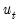
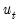
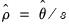
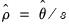

Equation Equation (31.38) is generally referred to as the response equation, with

the variable of interest. Equation
Equation (31.39) is termed the selection equation and determines whether is

observed or not.
The two-step method proceeds by first estimating a Probit regression for Equation (31.39) to obtain an estimate of , from which

may be calculated. A least squares regression of

on and
where the first summation is over observations for which (i.e., when

is unobserved), and the second for observations for which (
i.e., when

is observed).
To estimate the Heckman Selection Model, open the equation dialog by selecting or in the main EViews menu and selecting from the dropdown menu. Alternately, you may enter the command heckit in the command line.
The first page of the dialog, the tab, lets you specify both the response equation
Equation (31.38) and the selection equation
Equation (31.39). Both equations should be specified as the dependent variable followed by a space delimited list of regressors. Note that the dependent variable for the selection equation should be series containing only zeros and ones.
The page also lets you select the type of estimation method by selecting one of the two radio buttons; either or .
If you have chosen to estimate via maximum likelihood, the tab of the dialog lets you specify the type of covariance matrix, by using the dropdown menu. You may choose from , , and . You may also choose starting values for the maximum likelihood procedure. You may select to perform the Heckman two-step procedure to obtain starting values, or you can down-weight those starting values by choosing a multiple of them. The option will use the specified coefficient vector in the workfile to obtain starting values.
To estimate this equation in EViews, we click on …, and then change the equation method to . In the box we type:
To begin we select the estimation method. After clicking , the estimation results show and replicate the results in the first pane of Table 24.3 in Greene (note that Greene only shows the estimates of the Wage equation, plus

and

).
We can modify our equation to use as the estimation method. Click on the button to bring up the estimation dialog and change the method to . Next,click on the tab and change the to and click on to estimate the equation. The results match the second pane of Table 24.3 in Greene.


is a diagonal matrix with
on the diagonals,
is an identity matrix, , and is the coefficient covariance matrix from the Probit estimation of Equation (31.39).
 is only observable for a portion of the data. A classic example, in economics, of the sample selection problem is the wage equation for women, whereby a woman’s wage is only observed if she makes the decision to enter the work place, and is unobservable if she does not. Heckman’s (1976) paper that introduced the Heckman Selection model worked on this very problem.
is only observable for a portion of the data. A classic example, in economics, of the sample selection problem is the wage equation for women, whereby a woman’s wage is only observed if she makes the decision to enter the work place, and is unobservable if she does not. Heckman’s (1976) paper that introduced the Heckman Selection model worked on this very problem. only observed when .
only observed when .  and
and  are error terms which follow a bivariate normal distribution:
are error terms which follow a bivariate normal distribution: and correlation coefficient
and correlation coefficient  . Note that we have normalized the variance of  to 1 since this variance is not identified in this model.
. Note that we have normalized the variance of  to 1 since this variance is not identified in this model. and
and  are the standard normal density and cumulative distribution function, respectively. Then we may specify a regression model:
are the standard normal density and cumulative distribution function, respectively. Then we may specify a regression model: and . An estimator for the error standard deviation
and . An estimator for the error standard deviation  may be obtained from the usual standard error of the regression
may be obtained from the usual standard error of the regression  , and the ratio estimator  follows.
, and the ratio estimator  follows. and
and  , when, in fact, there are restrictions of the form and imposed on the parameters. EViews optimizes the model using transformed versions of the parameters:
, when, in fact, there are restrictions of the form and imposed on the parameters. EViews optimizes the model using transformed versions of the parameters: is the Hessian matrix, the information matrix), (where
is the Hessian matrix, the information matrix), (where  is the matrix of gradients), or as (the Huber/White matrix).
is the matrix of gradients), or as (the Huber/White matrix).